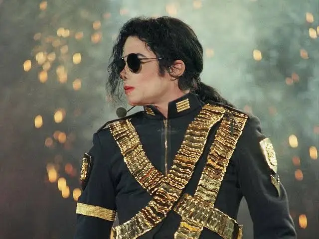

The Beatles, Michael Jackson e Louis Armstrong!
A música é uma forma de expressão universal que transcende fronteiras culturais, linguísticas e históricas. Desde os primórdios da civilização, a música tem desempenhado um papel central nas sociedades humanas, seja como uma forma de arte, entretenimento ou comunicação. Ela é composta por uma combinação harmoniosa de sons e ritmos, capaz de evocar emoções, contar histórias e criar conexões entre as pessoas.
Ao longo dos séculos, a música evoluiu para abranger uma variedade impressionante de estilos e gêneros, refletindo as mudanças sociais, tecnológicas e culturais de cada época. Dos cânticos religiosos nas antigas civilizações aos ritmos eletrônicos modernos, a música sempre se adaptou às novas realidades, mantendo sua capacidade de tocar o coração humano.
Além de ser uma ferramenta artística e cultural, a música tem uma profunda influência em nosso cotidiano. Ela pode relaxar, motivar, inspirar e até nos ajudar a superar momentos difíceis. Mais do que uma simples combinação de notas, a música é uma parte vital da identidade humana, carregando consigo histórias, sentimentos e tradições.
O rock é um dos gêneros musicais mais icônicos e revolucionários do século XX. Surgido nos Estados Unidos na década de 1950, o rock nasceu da fusão de elementos do blues, do jazz e do country, combinando guitarras elétricas marcantes, batidas fortes e letras que, muitas vezes, desafiavam as normas sociais. Com sua energia rebelde e ritmos contagiantes, o rock rapidamente conquistou a juventude da época, tornando-se símbolo de liberdade e contestação.
Bandas como The Beatles, Rolling Stones e Led Zeppelin ajudaram a moldar o gênero, transformando o rock em um fenômeno global. Ao longo dos anos, o estilo evoluiu para diversas subvertentes, como o hard rock, punk, grunge e o metal, mantendo-se relevante em diferentes contextos culturais e históricos.
Mais do que um simples estilo musical, o rock representou uma mudança no comportamento e nas atitudes da sociedade, influenciando moda, cinema e, principalmente, o modo de pensar de gerações inteiras.
O pop, abreviação de "popular", é um gênero musical que conquistou um público amplo devido às suas melodias cativantes e refrães fáceis de lembrar. Surgido na década de 1950, o pop evoluiu de uma mistura de estilos como o rock, jazz e R&B, adaptando-se ao gosto popular e à cultura de massa. Com letras leves e ritmos dançantes, o pop se tornou o som predominante nas rádios e nas paradas de sucesso ao redor do mundo.
Ícones como Michael Jackson, Madonna e Britney Spears são alguns dos nomes que definiram e revolucionaram o gênero, trazendo performances visuais impressionantes e inovações no cenário da música. O pop continua a se reinventar, abraçando influências de diferentes estilos musicais, como o hip hop e a música eletrônica, sempre com o objetivo de atingir o coração das massas.
Além de ser altamente acessível, o pop também tem a capacidade de unir gerações, tornando-se uma trilha sonora global para momentos de alegria, celebração e diversão.
O jazz é um gênero musical que nasceu no início do século XX nos Estados Unidos, especialmente nas comunidades afro-americanas de Nova Orleans. Caracterizado por sua rica improvisação, complexidade rítmica e fusão de elementos do blues, ragtime e música africana, o jazz é uma expressão artística profundamente enraizada na cultura e na história dos Estados Unidos.
Os músicos de jazz são conhecidos por sua habilidade de improvisação, criando solos espontâneos que refletem emoções e experiências pessoais. Nomes icônicos como Louis Armstrong, Duke Ellington e Miles Davis ajudaram a popularizar o gênero, elevando-o a novas alturas e explorando novas direções musicais, como o bebop e o jazz fusion.
O jazz não é apenas uma forma de entretenimento, mas também um meio de expressão cultural e social. Durante décadas, ele se tornou um símbolo de resistência e criatividade, abordando questões de identidade e desigualdade racial. Com sua riqueza harmônica e melódica, o jazz continua a influenciar uma variedade de estilos musicais e a inspirar novas gerações de músicos ao redor do mundo.
The Beatles, Michael Jackson e Louis Armstrong!
A música é um reflexo dos gostos culturais de cada geração, e os gêneros mais populares mudam com o tempo. Em 2023, os gêneros Pop, Rock e Jazz continuam a ter uma presença forte entre os ouvintes, mostrando sua relevância mesmo em um cenário musical diversificado. Este gráfico mostra a porcentagem de ouvintes para cada gênero, além de incluir um grupo representativo de “outros”, que engloba estilos variados que não se enquadram nos três gêneros principais.
Pop (30%): Com letras acessíveis e batidas cativantes, o Pop segue como o gênero favorito para muitos.
Rock (27%): A paixão pelo Rock é evidente, com uma base fiel de ouvintes que mantém o gênero relevante.
Jazz (10%): Embora com menor alcance, o Jazz é apreciado por suas composições complexas.